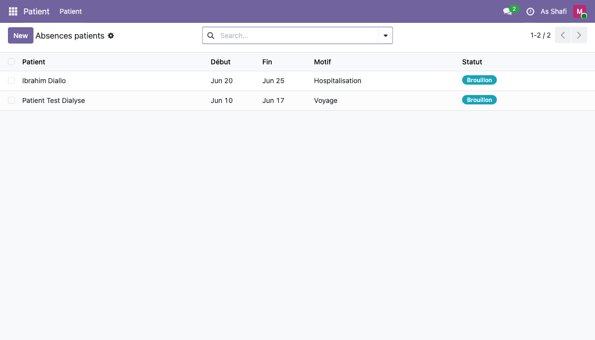

En tant que secrétaire médicale, vous êtes le premier point de contact administratif du patient : création et mise à jour des dossiers, planification des rendez-vous, gestion des absences et suivi de la liste d'attente pour les postes de dialyse.
Connexion et accueil
Accédez à l'interface HMS Néphro depuis votre navigateur. Après authentification, vous arrivez directement sur le tableau de bord Odoo depuis lequel vous naviguez vers la gestion des patients.
-
a
Ouvrez votre navigateur et saisissez
http://localhost:8069/web/login -
b
Entrez l'identifiant
secretaire@nephro.testet le mot de passeNephro2024! - c Cliquez sur Se connecter — vous accédez au tableau de bord Odoo
- d Dans le menu principal, naviguez vers Patient > Patient pour accéder à la liste des patients
Enregistrement d'un nouveau patient
La création d'un dossier patient est l'opération fondamentale de votre rôle. Chaque champ obligatoire doit être renseigné avec soin pour assurer un suivi clinique correct. Le champ Nephrology Care est particulièrement important : il active le module de suivi dialyse pour le patient et le rend visible dans les dashboards médecin et infirmière.
- a Depuis la liste Patient > Patient, cliquez sur le bouton New en haut à gauche
- b Renseignez les champs obligatoires : Nom de famille, Prénom, Date de naissance, Genre, Téléphone
- c Cochez la case Nephrology Care — cela active le suivi dialyse pour ce patient
-
d
Renseignez l'Accès vasculaire (ex.
FAV— Fistule artério-veineuse) et le Planning (ex.LMV Matin) -
e
Cliquez sur Sauvegarder — le numéro HMS est généré automatiquement (ex.
HMS009)
Patient de référence :
HMS009) est généré automatiquement par une séquence Odoo et ne peut pas être modifié manuellement. Il sert d'identifiant unique dans tous les documents de l'hôpital.
Gestion des rendez-vous
Les rendez-vous sont gérés directement depuis la fiche du patient via les smart buttons visibles en haut du formulaire. Vous pouvez créer, modifier et suivre l'état de chaque rendez-vous.
- a Ouvrez la fiche du patient concerné depuis Patient > Patient
- b Cliquez sur le smart button Appointments en haut de la fiche (il indique le nombre de RDV existants)
- c Cliquez sur New pour créer un nouveau rendez-vous
- d Renseignez : Date et heure, Médecin responsable, Motif de consultation
-
e
Sauvegardez — le RDV passe au statut
Scheduled -
f
Le médecin fera passer le statut à
Confirmedavant la consultation puisDoneaprès
Cycle de vie d'un rendez-vous :
Gestion des absences patients
Le module d'absences permet de signaler et de documenter les périodes pendant lesquelles un patient ne peut pas se présenter à ses séances de dialyse. Une fois validée, l'absence bloque automatiquement la génération des séances pour la période concernée, évitant ainsi des séances fantômes dans le planning.

- a Accédez à Néphrologie > Absences patients dans le menu principal
- b Consultez la liste des absences existantes avec leur statut
- c Cliquez sur New pour enregistrer une nouvelle absence
- d Sélectionnez le Patient concerné dans le menu déroulant
- e Définissez la Date de début et la Date de fin de l'absence
-
f
Choisissez le Motif :
Hospitalisation,VoyageouAutre - g Ajoutez une note explicative si nécessaire dans le champ Remarques
- h Cliquez sur Valider — les séances de la période sont automatiquement bloquées
Absences actuellement enregistrées dans le système :
| Patient | Début | Fin | Motif | Statut |
|---|---|---|---|---|
| Ibrahim Diallo | 20 juin 2026 | 25 juin 2026 | Hospitalisation | Brouillon |
| Patient Test Dialyse | 10 juin 2026 | 17 juin 2026 | Voyage | Brouillon |
Consulter la liste d'attente
La liste d'attente regroupe tous les patients en attente d'attribution d'un poste de dialyse. Vous pouvez y consulter leur priorité, la date d'inscription et le médecin référent. Votre rôle est de maintenir cette liste à jour et d'informer le médecin en cas de disponibilité.
- a Accédez à Néphrologie > Liste d'attente dans le menu principal
- b Consultez les patients en attente, triés par date d'inscription ou priorité médicale
- c Cliquez sur un patient pour accéder à sa fiche complète et vérifier ses informations administratives
- d Lorsqu'un poste se libère, informez le médecin néphrologue qui prendra la décision d'attribution
Urgence ou Date d'inscription
disponibles dans la barre de recherche en haut de la liste.
Générer des séances en masse
Le wizard de génération en masse permet de créer automatiquement les séances de dialyse pour un ou plusieurs patients sur une période donnée, en respectant leur planning habituel. Vous pouvez optionnellement créer les rendez-vous associés.
- a Naviguez vers Néphrologie > Générer séances en masse
- b Cliquez sur New pour ouvrir le wizard de génération
- c Étape 1 — Paramètres : sélectionnez les patients (un ou plusieurs), le planning de dialyse, et la période (date début / date fin)
- d Cochez Exclure jours fériés si vous souhaitez éviter de générer des séances les jours fériés configurés
- e (Optionnel) Cochez Créer aussi les RDV pour générer automatiquement un rendez-vous lié à chaque séance (relation 1:1)
- f Cliquez sur Générer l'aperçu pour passer à l'étape de validation
- g Étape 2 — Validation : vérifiez le récapitulatif des séances qui vont être créées (patients, dates, conflits éventuels)
- h Cliquez sur Confirmer pour créer toutes les séances